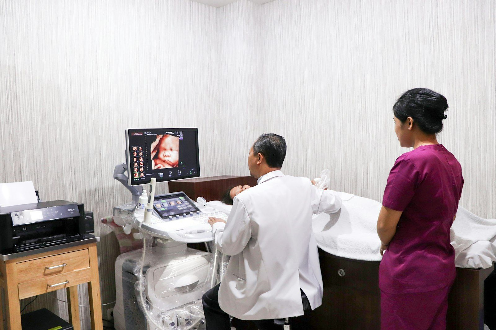
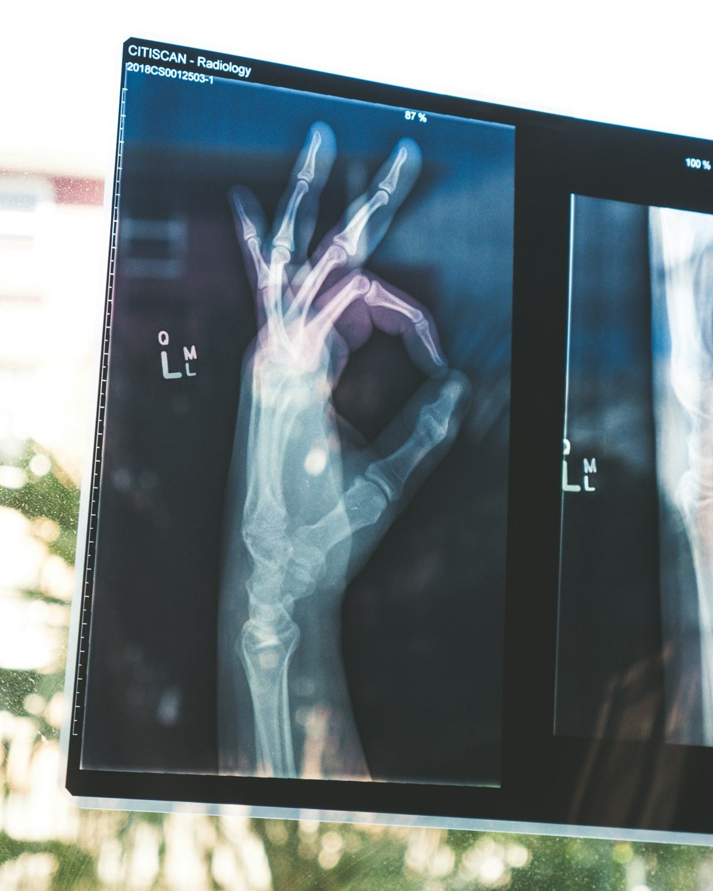
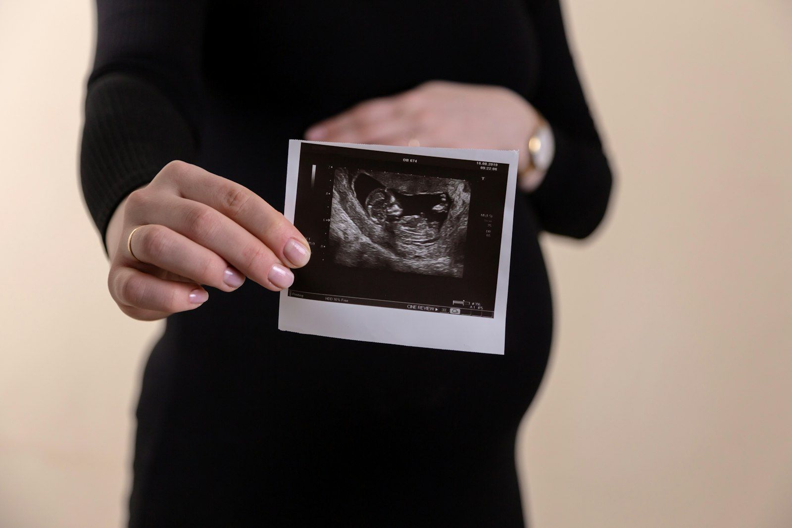
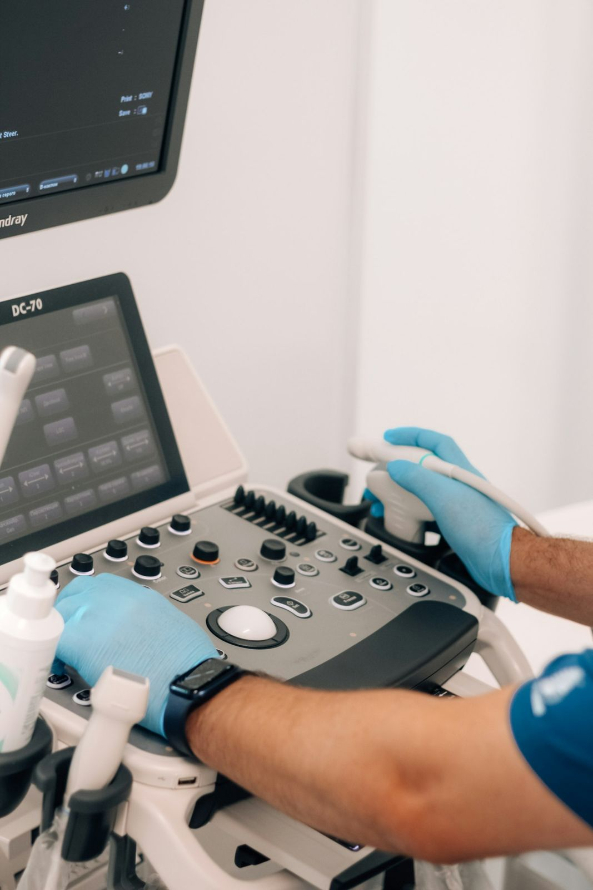
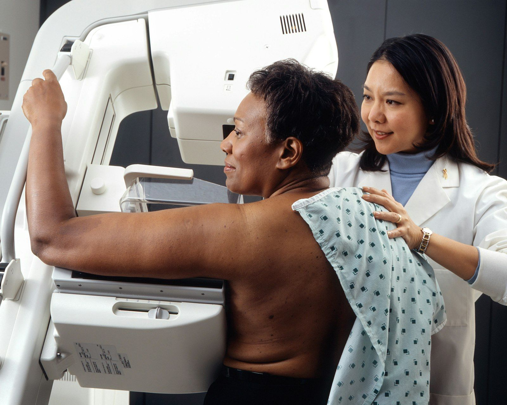
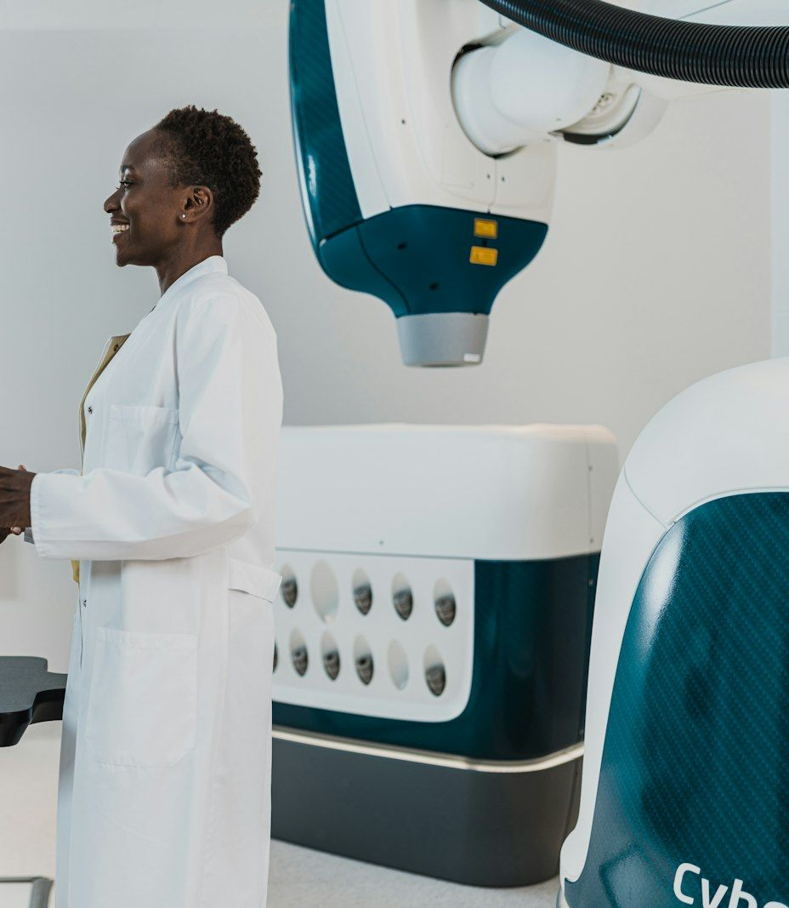

Votre imagerie médicale, précise et rassurante.
Radiographie numérique, échographie, doppler et mammographie, réalisés et interprétés par le Dr Alexis Fernand KOUMBA, médecin spécialiste en radiodiagnostic et imagerie médicale.
- Sur ordonnance, avec ou sans rendez-vous
- Compte rendu transmis à votre médecin

L'imagerie dont vous avez besoin, près de chez vous

Radiographie numérique
Thorax, os et articulations, colonne, sinus, abdomen : des images nettes avec une faible dose de rayons.
Échographie
Un examen sans rayons et sans douleur pour explorer les organes et les tissus mous.

Échographie obstétricale
Le suivi de votre grossesse, trimestre après trimestre, dans un cadre calme et bienveillant.

Écho-doppler
L'étude de la circulation du sang dans les veines et les artères.

Mammographie
Dépistage et diagnostic des maladies du sein, complétés si besoin par une échographie.

Examens avec produit de contraste
Hystérographie, urographie, transit œso-gastro-duodénal : des examens spécialisés, sur rendez-vous.
Votre examen en 4 étapes
- 1
Votre ordonnance
Votre médecin vous prescrit l'examen. Pas d'ordonnance ? Appelez-nous, nous vous conseillons.
- 2
Rendez-vous
En ligne, par téléphone ou WhatsApp. Nous vous rappelons la préparation la veille.
- 3
L'examen
Accueil au cabinet, examen réalisé par le radiologue et son équipe.
- 4
Les résultats
Images et compte rendu remis au patient et transmis à votre médecin.
Dr Alexis Fernand KOUMBA
Médecin spécialiste en radiodiagnostic et imagerie médicale. Il réalise et interprète vos examens, et reste disponible pour échanger avec votre médecin traitant.
- Examens réalisés et interprétés par un médecin spécialiste
- Matériel numérique : moins de rayons, images plus nettes
- Comptes rendus clairs, remis au patient et au prescripteur
Ils nous ont fait confiance
« Accueil très doux, le docteur a pris le temps de tout nous expliquer. Nous sommes repartis avec les photos de notre bébé. »
« Rendez-vous le jour même, résultats en moins d'une heure. Efficace et professionnel. »
« J'appréhendais l'examen, l'équipe m'a mise en confiance. Compte rendu clair, envoyé à mon gynécologue. »
Faut-il une ordonnance ?
Oui, la plupart des examens sont réalisés sur prescription médicale. Sans ordonnance, appelez-nous : nous vous orientons.
Puis-je venir sans rendez-vous ?
Les radiographies simples peuvent être faites sans rendez-vous aux heures d'ouverture. Les échographies, mammographies et examens avec contraste se font sur rendez-vous.
Quand aurai-je mes résultats ?
Les images de radiographie sont immédiates. Le compte rendu d'échographie est remis à la fin de l'examen ; celui d'une mammographie ou d'un examen avec contraste sous 24 h.
Les rayons X sont-ils dangereux ?
Les doses utilisées en radiologie numérique sont très faibles. Signalez toujours une grossesse possible : l'examen sera adapté ou remplacé par une échographie.
Un examen à passer ?
Prenez rendez-vous en ligne, nous vous confirmons le créneau par WhatsApp.